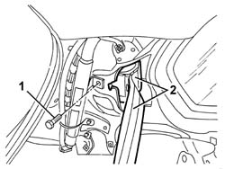

7065B10 l/h or r/h rear safety belt (one) - r+r
- Path
- Procedures > 70 FITTINGS > 7065 SEAT BELTS AND ACCESSORIES > 7065B rear safety belts > 7065B10 l/h or r/h rear safety belt (one) - r+r
- Kind
- repair procedure (removal / refitting; the operation number is the code)
- Applies to
- all engines; all production periods
- Interactive page
- https://sloeber94.github.io/elrnDB-a147/en/#/3025927
Applies to: all engines; all production periods
 Removing
Removing
 Refitting
Refitting7040L40 front compartment scuff strip - r r
7050A22 rear seat cushion - r+r
7040G30 boot light bulb holder - r r (right side only)
7040H42 rear pillar trim - r r
1. Unscrew the reel retaining bolt.
2. Remove the seat belt with reel.

Applies to: all engines; all production periods
Refitting
RemovingCheck that the seat belt is undamaged.
Fit the winder.
Tighten the winder retaining bolt.
 | Fastening | Component | Ø | Value (daNm) |
|---|---|---|---|---|
- | Bolt | REAR SEAT BELT REEL. | M7/16' | 4.0 |
7040H42 rear pillar trim - r r
7040G30 boot light bulb holder - r r (right side only)
Topics linked from this page (5)
- 7040G30 boot light bulb holder - r r
- 7040H42 rear pillar trim - r r
- 7040H50 rear panel - r r
- 7040L40 front compartment scuff strip - r r
- 7050A22 rear seat cushion - r+r